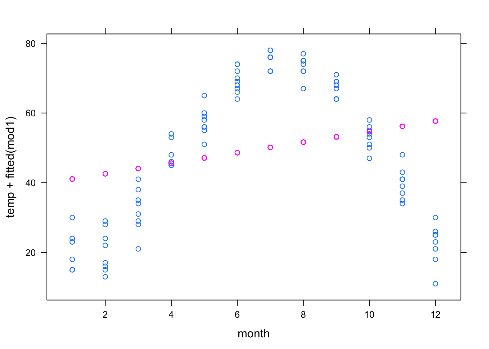

Chapter 7 Model formulas and coefficients
Make sure mosaic is loaded.
7.1 Examining model coefficients
The lm() operator finds model coefficients. To illustrate, here’s a pair of statements that read in a data frame and fit a model to it:
mod <- lm( time ~ year + sex, data = SwimRecords) The first argument to lm is a model design, the second is the data frame.
The object created by lm — here given the name mod — contains a variety of information about the model. To access the coefficients themselves, use the coef() operator applied to the model:
coef(mod)## (Intercept) year sexM
## 555.7167834 -0.2514637 -9.7979615As shorthand to display the coefficients, just type the name of the object that is storing the model:
mod##
## Call:
## lm(formula = time ~ year + sex, data = SwimRecords)
##
## Coefficients:
## (Intercept) year sexM
## 555.7168 -0.2515 -9.7980A more detailed report can be gotten with the summary operator. This gives additional statistical information that will be used in later chapters:
summary(mod)##
## Call:
## lm(formula = time ~ year + sex, data = SwimRecords)
##
## Residuals:
## Min 1Q Median 3Q Max
## -4.7027 -2.7027 -0.5968 1.2796 19.0759
##
## Coefficients:
## Estimate Std. Error t value Pr(>|t|)
## (Intercept) 555.71678 33.79991 16.441 < 2e-16 ***
## year -0.25146 0.01732 -14.516 < 2e-16 ***
## sexM -9.79796 1.01287 -9.673 8.79e-14 ***
## ---
## Signif. codes: 0 '***' 0.001 '**' 0.01 '*' 0.05 '.' 0.1 ' ' 1
##
## Residual standard error: 3.983 on 59 degrees of freedom
## Multiple R-squared: 0.844, Adjusted R-squared: 0.8387
## F-statistic: 159.6 on 2 and 59 DF, p-value: < 2.2e-16From time to time in the exercises, you will be asked to calculate model values “by hand.” This is accomplished by multiplying the coefficients by the appropriate values and adding them up. For example, the model value for a male swimmer in 2010 would be:
555.7 - 0.2515*2010 - 9.798## [1] 40.387Notice that the “value” used to multiply the intercept is always 1, and the “value” used for a categorical level is either 0 or 1 depending on whether there is a match with the level. In this example, since the swimmer in question was male, the value of sex M is 1. If the swimmer had been female, the value for sex M would have been 0.
When a model includes interaction terms, the interaction coefficients need to be multiplied by all the values involved in the interaction. For example, here is a model with an interaction between year and sex:
mod2 <- lm( time ~ year * sex, data = SwimRecords)
coef(mod2)## (Intercept) year sexM year:sexM
## 697.3012156 -0.3240459 -302.4638388 0.1499166697.3 - 0.3240*2010 - 302.5 + 0.1499*2010## [1] 44.859The year:sexM coefficient is being multiplied by the year (2010) and the value of sex M, which is 1 for this male swimmer.
7.2 Other Useful Operators
cross()will combine two categorical variables into a single variable. For example, in the Current Population Survey data, the variablesexhas levels F and M, while the variableracehas levels W and NW. Crossing the two variables combines them; the new variable has four levels: F.NW, M.NW, F.W, M.W:
CPS <- CPS85 # from mosaicData
RaceSex <- cross(CPS$sex, CPS$race)
summary(RaceSex)## F:NW F:W M:NW M:W
## 28 217 39 250The summary tells us that there are 28 non-white females, 270 white females, etc, in the new categorical variable called RaceSex.
as.factor()will convert a quantitative variable to a categorical variable. This is useful when a quantity likemonthhas been coded as a number, say 1 for January and 2 for February, etc. but you do not want models to treat it as such.
To illustrate, consider two different models of the usage temperature versus month:
utils <- read.csv("http://tiny.cc/mosaic/utilities.csv")
mod1 <- lm( temp ~ month, data = utils)
mod2 <- lm( temp ~ as.factor(month), data = utils)Here are the graphs of those models:
xyplot(temp + fitted(mod1) ~ month, data = utils)
xyplot( temp + fitted(mod2) ~ month, data = utils )
In the first model, month is treated quantitatively, so the model term month produces a straight-line relationship that does not correspond well to the data.
In the second model, month is treated categorically, allowing a more complicated model relationship. In fact, this is a groupwise model: the model values represent the mean temperature for each month.